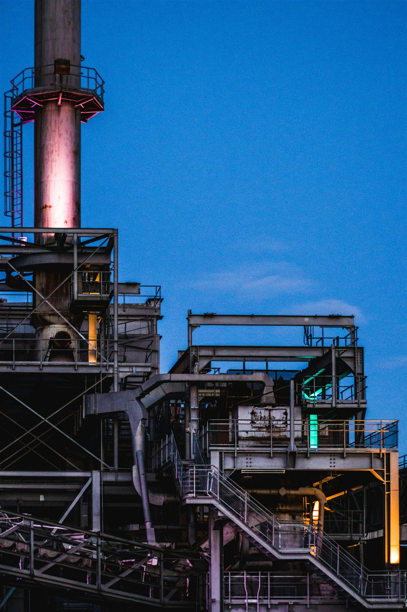

Experience built in
complex, regulated
environments.
Soma works across complex, regulated and project-led environments where leadership, alignment and reliable delivery are critical, across the sectors and organisational environments below.
Explore our sector experience
Depth built across nine complex environments.
Each sector brings its own regulatory, operational and delivery pressures. Soma’s role stays consistent: helping the people and teams inside these programmes align around a common goal and deliver it together.
Energy
Large capital investment, complex partner structures and shifting regulatory pressure.
Nuclear
Regulatory oversight, long asset lifecycles and the transfer of expertise as experienced teams retire.
Infrastructure
Complex partner and joint venture structures, with delivery that has to hold together across multiple organisations and long timescales.
Utilities
Large capital investment and long asset lifecycles under sustained regulatory oversight.
Defence
Multiple stakeholders, long procurement cycles and the trust needed to work across organisational boundaries.
Pharmaceuticals
Safety-critical standards and long approval cycles that depend on disciplined, well governed delivery.
Engineering
Multiple disciplines and long procurement cycles that depend on people working to a shared method.
Manufacturing
Coordination across disciplines and safety-critical standards, delivered to a shared plan and method.
Construction
Long procurement cycles and safety-critical standards, delivered across multiple organisations working to one plan.
Soma’s wider history also includes work across oil and gas, petrochemicals, technology, public sector organisations, asset management and industrial services.
Four decades of delivery, worldwide
While maintaining continuous delivery across the United Kingdom for more than four decades, Soma’s experience has grown internationally, combining deep behavioural expertise with practical experience across major projects, organisational transformation and operational excellence.
A two year engagement supporting the leadership of an Australian based engineering organisation through an acquisition shows this experience in practice: the kind of integration and organisational change work that runs across many of these sectors, with EBIT maintained above 10%.
Read the case studyFacing a challenge that does not fit neatly into one sector?
Speak to Soma about the outcomes you need to achieve, whatever industry you work in.
Speak to Our Team